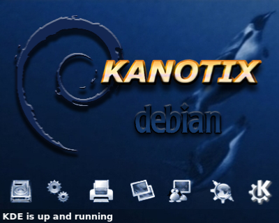

An operating system (OS) is system software that manages computer hardware, software resources, and provides common services for computer programs. Time-sharing operating systems schedule tasks for efficient use of the system and may also include accounting software for cost allocation of processor time, mass storage, printing, and other resources. For hardware functions such as input and output and memory allocation, the operating system acts as an intermediary between programs and the computer hardware, [1][2] although the application code is usually executed directly by the hardware and frequently makes system calls to an OS function or is interrupted by it. Operating systems are found on many devices that contain a computer – from cellular phones and video game consoles to web servers and supercomputers. The dominant general-purpose[3] desktop operating system is Microsoft Windows with a market share of around 76.45%. macOS by Apple Inc. is in second place (17.72%), and the varieties of Linux are collectively in third place (1.73%).[4] In the mobile sector (including smartphones and tablets), Android's share is up to 72% in the year 2020.[5] According to third quarter 2016 data, Android's share on smartphones is dominant with 87.5 percent with also a growth rate of 10.3 percent per year, followed by Apple's iOS with 12.1 percent with per year decrease in market share of 5.2 percent, while other operating systems amount to just 0.3 percent.[6] Linux distributions are dominant in the server and supercomputing sectors. Other specialized classes of operating systems (special-purpose operating systems)[3][7]), such as embedded and real-time systems, exist for many applications. Security-focused operating systems also exist. Some operating systems have low system requirements (e.g. light-weight Linux distribution). Others may have higher system requirements.
| Operating system | symbol | link | GUI |
|---|---|---|---|
| Linux | Linux | |
| Distribution | Description |
|---|---|
| Astra Linux | A distribution developed for the Russian Army with raised security. |
| Deepin | A Debian-based Chinese Linux Distribution developed by Wuhan Deepin Technology Co. |
| Kanotix | An installable live DVD/CD for desktop usage using KDE and LXDE, focusing on convenient scripts and GUI for ease of use.[20] |
| Pardus | Developed by Turkish National Research Institute of Electronics and Cryptology. Prior to 2013 it used PISI as the package manager, with COMAR as the configuration framework. Starting with Pardus 2013, it is Debian-based. |
| SteamOS | Debian-based and gaming-focused distribution developed by Valve and designed around the Steam digital distribution platform. |
| Ubuntu | A free and open-source operating system and Linux distribution based on Debian. |
| Distribution | Description |
|---|---|
| Parrot OS | A Linux distribution based on Debian used by penetration testers. |
| Kali Linux | Made to be a completely customizable OS, used for penetration testing. It is based on Debian GNU/Linux and is used mostly by security experts[40] |
| gLinux | gLinux Is a Linux Distro used for Google Employees. |
| Parsix | Optimized for personal computers and laptops. Built on top of Debian testing branch and comes with security support.[41] |
Astra Linux is a Russian Linux-based computer operating system (OS) developed to meet the needs of the Russian army, other armed forces and intelligence agencies.[1] It provides data protection up to the level of "top secret" in Russian classified information grade. It has been officially certified by Russian Defense Ministry, Federal Service for Technical and Export Control[2] and Federal Security Service.
Deepin (stylized as deepin; formerly known as Linux Deepin and Hiweed Linux[6][4]) is a Linux distribution based on Debian's stable branch. It features DDE, the Deepin Desktop Environment, built on Qt and available for various distributions like Arch Linux, Fedora, Manjaro and Ubuntu. As of version 15.10 it also uses dde-kwin, a set of patches for KDE Plasma's window manager.[7] In 2019, Huawei started to ship Linux laptops pre-installed with deepin.[8] Deepin's userbase is predominately Chinese, and it is developed in Wuhan, China by Wuhan Deepin Technology, as of 1 January 2020, a wholly owned subsidiary of UnionTech (统信软件).
Kanotix , also referred to as KANOTIX, is an operating system based on Debian, with advanced hardware detection.[1][2] It can run from an optical disc drive or other media i.e. USB-stick without using a hard disk drive. Kanotix uses KDE Software Compilation as the default desktop environment. Since 2013 the newer releases ship with LXDE as a second lightweight desktop environment. Unlike other similar Linux-distributions Kanotix is a rolling release. Nightly builds are automated builds every night of the latest development code of KANOTIX and with the latest packages from the repositories.[3] The name "Kanotix" is derived from the founder's nickname "Kano". Kanotix's mascot is a fangtooth.
Parrot is based on Debian's testing branch (Bullseye), with a Linux 5.10 kernel. It follows a rolling release development model.[2] The desktop environments are MATE and KDE, and the default display manager is LightDM.[3][4] The system is certified to run on devices which have a minimum of 256MB of RAM, and it is suitable for both 32-bit (i386) and 64-bit (amd64) processor architectures.[5] Moreover, the project is available for ARMv7 (armhf) architectures.

Kali Linux has around 600[5] pre-installed penetration-testing programs (tools), including Armitage (a graphical cyber attack management tool), Nmap (a port scanner), Wireshark (a packet analyzer), metasploit (penetration testing framework, awarded as the best penetration testing software), John the Ripper (a password cracker), sqlmap (automatic SQL injection and database takeover tool), Aircrack-ng (a software suite for penetration-testing wireless LANs), Burp suite and OWASP ZAP web application security scanners

Parsix GNU/Linux is a live and installation DVD based on Debian. The Parsix project's goal is to provide a ready to use, easy to install, desktop and laptop optimized operating system based on Debian's testing branch and the latest stable release of GNOME desktop environment.[2] It is possible to install extra software packages from the projects's own APT repositories.[3] In 2017, the official website announce the shutdown of the project in the year, and suggest users to go to Debian